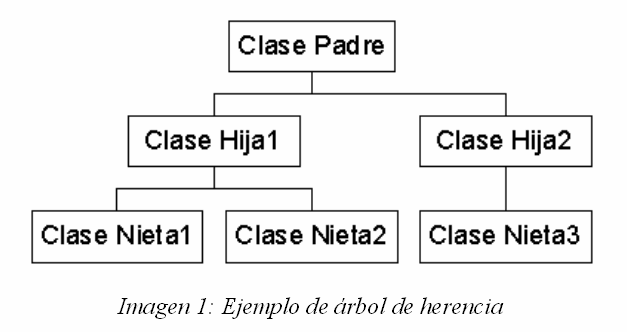

Java soporta la herencia permitiendo una clase a incorporar otra clase en su declaración. Esto se hace mediante el uso de la palabra clave extends. Por lo tanto, la subclase se añade (se extiende) a la superclase.
Ventajas de la Herencia:
Entre las principales ventajas que ofrece la herencia en el desarrollo de aplicaciones, están:
-Reutilización del código:
En aquellos casos donde se necesita crear una clase que, además de otros propios, deba incluir los métodos definidos en otra, la herencia evita tener que reescribir todos esos métodos en la nueva clase.
-Mantenimiento de aplicaciones existentes:
Utilizando la herencia, si tenemos una clase con una determinada funcionalidad y tenemos la necesidad de ampliar dicha funcionalidad, no necesitamos modificar la clase existente (la cual se puede seguir utilizando para el tipo de programa para la que fue diseñada) sino que podemos crear una clase que herede a la primera, adquiriendo toda su funcionalidad y añadiendo la suya propia.